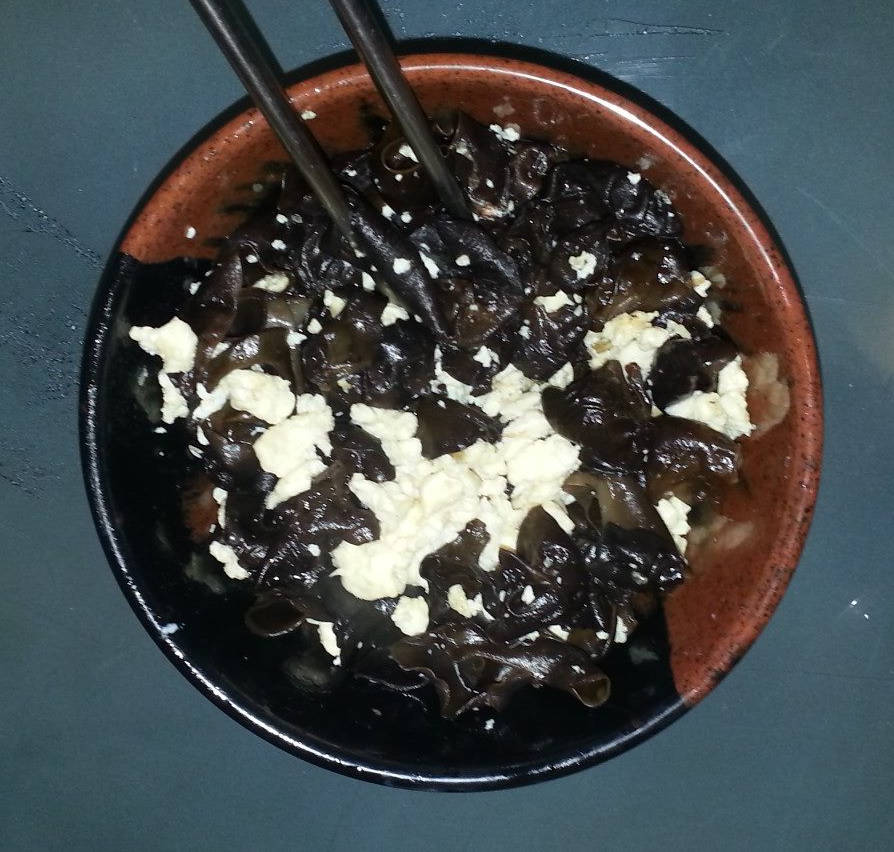
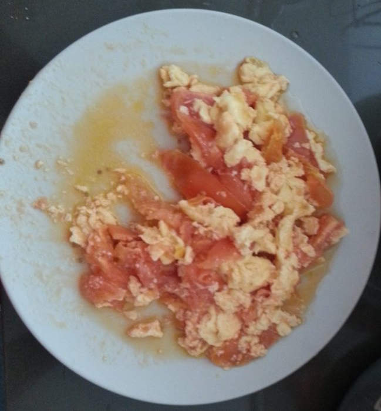

奶油鲍鱼菇
材料： 鮑魚菇300公克、洋地瓜200公克、樹子50公克、薑末10公克、香菜10公克、麵粉30公克。調味料：
醬油2大匙、蘋果淳1大匙、香油1大匙、糖1/2小匙、黑胡椒粒1/2小匙。
作法：
鮑魚菇切花刀、洋地瓜切成末、香菜切末，備用。 鮑魚菇沾上麵粉放入鍋中煎至上色，備用。 鍋中放入1大匙葡萄籽油，爆香洋地瓜、樹子、薑末放入鮑魚菇、調味料燒至入味，灑上香菜即可盛盤。
- 我误用红薯代替了洋地瓜.洋地瓜又名豆薯,见Wiki.
- 菇应该煎得焦一点
- 红薯本身甜的，加苹果醋和糖后就过甜了.而洋地瓜则是淡的,可能口感上也好一点
- 生姜尽可能切碎
- 面粉应该一开始放在干燥的碗里,面粉本身不结块,用生粉代替不好
- 黑胡椒粒还是需要的
- 香菜保持干燥包好隔绝空气放到冰箱保存
- 树子是台湾特产,在悉尼可能只能买罐头了，见这道菜谱.
- 酱油好像放了多一点
- 不过再视频里一大勺实际上是满满两勺

蘑菇鸡肉意大利面做法
- 大蒜15片切碎，橄榄油炸到焦黄
- 蘑菇倒入翻炒到软掉
- 倒入鸡肉块300克炒至鸡肉变白
- 倒入Five Brother Alfredo Pasta Sauce 220克加少量水
- 又有说小火炒5分钟,偶尔翻炒,到浆粘稠，不要沸腾
- 参考Fettuccine Alfredo at wikipedia获得背景，看来要加大量黄油和Cheese
- 看另一菜谱
- 盐要少加一点调味,因为sauce以有盐
- 起锅拌上熟意大利面，加九层塔(Basil),撒上黑胡椒
- 大概三人份


黑木耳炒蛋的做法
- 到少量油，四成热，蛋打碎，用小汤勺缓慢搅拌
- 蛋炒熟后捞出，放入木耳单独炒
- 炒木耳要多放盐
- 最后一起炒

Elisp code: copy full path of current file into OS clipboard and yank ring
Copy below code into ~/.emacs. The hot keys is "C-x v f":
;; you need install xsel under Linux ;; xclip has some problem when copying under Linux(defun copy-yank-str (msg) (kill-new msg) (with-temp-buffer (insert msg) (shell-command-on-region (point-min) (point-max) (cond ((eq system-type 'cygwin) "putclip") ((eq system-type 'darwin) "pbcopy") (t "xsel -ib") ))))
(defun copy-full-path-of-current-buffer () "copy full path into the yank ring and OS clipboard" (interactive) (when buffer-file-name (kill-new (file-truename buffer-file-name)) (copy-yank-str (file-truename buffer-file-name)) (message "full path of current buffer => clipboard & yank ring") ))
(global-set-key (kbd "C-x v f") 'copy-full-path-of-current-buffer)
Poor man's github
Key points of this article:
- Build a github prototype written in Bash within 5 minutes
- Highlight key elements in my usual git work flow
- Git is scalabe. you can use any tool to extend it.
As Yuri Albuquerque mentioned, there are more powerful tools like gitolite. But the key concept behind the system is similar.
Add following code into ~/.bashrc and run "source ~/.bashrc", then run "gih" to see help:
function gih() { local MY_USERNAME=git local MY_SSH_URL=git@domain.name local MY_SSH_PORT=8888 if [ -z "$1" ]; then cat << 'EOF' Usage: gih [command]Commands:
l, ls, list - list the projects
n, new [project-name] - create a new project
r, readme [project-name] - show README
i, issue [project-name] - show issues list
st, status - check free space of git server
u, url [project-name] - the full url of the project
EOF else case $1 in l|ls|list) ssh -p $MY_SSH_PORT $MY_SSH_URL "ls -1"|sed 's/.git$//g' ;; n|new) if [ -z "$2" ]; then echo "Please input the name of new project!" echo "Current projects hosted:" ssh -p $MY_SSH_PORT $MY_SSH_URL "ls -1"|sed 's/.git$//g' else ssh -p $MY_SSH_PORT $MY_SSH_URL "mkdir -p ~/$2.git;cd ~/$2.git;git --bare init;" echo "Push existing repository from command line:" echo git remote add origin ssh://$MY_SSH_URL:$MY_SSH_PORT/home/$MY_USERNAME/$2.git echo git push -u origin master fi ;; r|readme) if [ -z "$2" ]; then echo "Please input the name of new project!" echo "Current projects hosted:" ssh -p $MY_SSH_PORT $MY_SSH_URL "ls -1"|sed 's/.git$//g' else ssh -p $MY_SSH_PORT $MY_SSH_URL "cd ~/$2.git;git show HEAD:README.org || git show HEAD:README.md" fi ;; i|issue) if [ -z "$2" ]; then echo "Please input the name of new project!" echo "Current projects hosted:" ssh -p $MY_SSH_PORT $MY_SSH_URL "ls -1"|sed 's/.git$//g' else ssh -p $MY_SSH_PORT git@sydneypc.mooo.com "cd ~/$2.git;git show HEAD:ISSUE.org || git show HEAD:ISSUE.md" fi ;; st|status) ssh -p $MY_SSH_PORT $MY_SSH_URL "df -h /dev/sda1" ;; u|url) echo ssh://$MY_SSH_URL:$MY_SSH_PORT/home/$MY_USERNAME/$2.git ;; *) echo "Unknown command, check help please" ;; esac fi }
番茄炒蛋的做法
- 四个6厘米直径的番茄对应4到6个蛋
- 多放油,番茄先炒,炒到茄红素溶于油,油为红色,全部捞出
- 放少量油,小火加温，加蛋,慢慢搅动蛋
- 加入番茄,然后加入太白粉勾兑的汤一点
参考阿基师教你番茄炒蛋. 
How to do the screen cast in Linux
See http://askubuntu.com/questions/107726/how-to-create-animated-gif-images-of-a-screencast.
Issues:
- does not work in i3.
- I'd better put all the files in ram disk because it takes time for the conversion
- gifsicle is NOT needed
- I need find some way to adjust the record frame
- I use gimp to crop the gif
How to use terminal in Emacs effectively
to use terminal in Emacs effectively :emacs:terminal:en:shell:
I'm an experienced bash user before learning Emacs. Now as a die hard Emacs user, I still want to use my bash skill.
The Emacs terminator simulator Ansi Term help me on this purpose. Check my setup and the EmacsWiki for the guide.
I need copy the output in ansi-term to somewhere else frequently. So I often got the issue about selecting output effectively?
Emacs manual says I can "M-x term-line-mode" to switch to term-line-mode to select text. Then I need restore to the original mode by "M-x term-char-mode".
That's many keys to press. Besides, I can not tell what's the current mode, term-char-mode or term-line-mode?
My solution is evil-mode. I press C-z to toggle on vim simulator in ansi-term. I can press C-z again to toggle off the vim simulator.
The beauty is I've got the Vi power to select,search, filter, yank.
BTW, "C-z" is the default hot key from evil-mode. Evil-mode assign "C-x C-z" for "M-x suspend-frame".